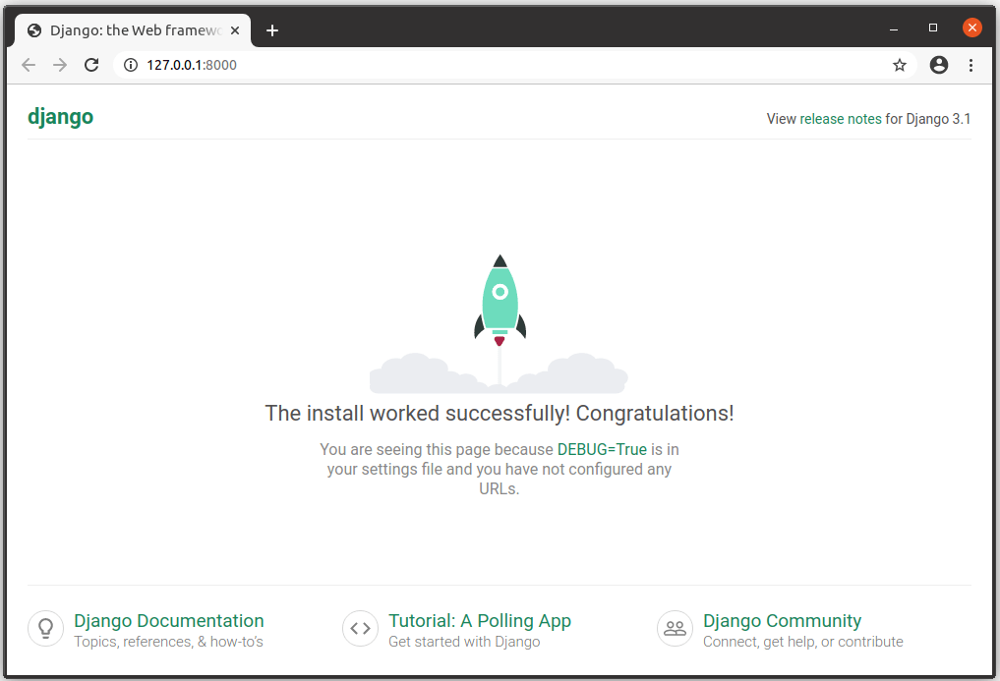

Now that you know what Django is for, we'll show you how to set up and test a Django development environment on Windows, Linux (Ubuntu), and macOS — whatever common operating system you are using, this article should give you what you need to be able to start developing Django apps.
| Prerequisites: | Basic knowledge of using a terminal/command line and how to install software packages on your development computer's operating system. |
|---|---|
| Objective: | To have a development environment for Django (3.*) running on your computer. |
Django makes it very easy to set up your own computer so that you can start developing web applications. This section explains what you get with the development environment, and provides an overview of some of your setup and configuration options. The remainder of the article explains the recommended method of installing the Django development environment on Ubuntu, macOS, and Windows, and how you can test it.
The development environment is an installation of Django on your local computer that you can use for developing and testing Django apps prior to deploying them to a production environment.
The main tools that Django itself provides are a set of Python scripts for creating and working with Django projects, along with a simple development webserver that you can use to test local (i.e. on your computer, not on an external web server) Django web applications on your computer's web browser.
There are other peripheral tools, which form part of the development environment, that we won't be covering here. These include things like a text editor or IDE for editing code, and a source control management tool like Git for safely managing different versions of your code. We are assuming that you've already got a text editor installed.
Django is extremely flexible in terms of how and where it can be installed and configured. Django can be:
Each of these options requires a slightly different configuration and setup. The following subsections explain some of your choices. For the rest of the article, we'll show you how to setup Django on a small number of operating systems, and that setup will be assumed throughout the rest of this module.
Other possible installation options are covered in the official Django documentation. We link to the appropriate documents below.
Django web applications can be run on almost any machine that can run the Python 3 programming language: Windows, macOS, Linux/Unix, Solaris, to name just a few. Almost any computer should have the necessary performance to run Django during development.
In this article, we'll provide instructions for Windows, macOS, and Linux/Unix.
You can use any Python version supported by your target Django release. For Django 3.1.2 the allowed versions are Python 3.6 to 3.8 (see FAQ:Installation).
The Django project recommends (and "officially supports") using the newest available supported Python release.
Python 2.7 cannot be used with the current releases of Django (The Django 1.11.x series is the last to support Python 2.7).
There are three places to download Django:
This article shows how to install Django from PyPi, in order to get the latest stable version.
Django supports four main databases (PostgreSQL, MariaDB, MySQL, Oracle, and SQLite), and there are community libraries that provide varying levels of support for other popular SQL and NoSQL databases. We recommend that you select the same database for both production and development (although Django abstracts many of the database differences using its Object-Relational Mapper (ORM), there are still potential issues that are better to avoid).
For this article (and most of this module) we will be using the SQLite database, which stores its data in a file. SQLite is intended for use as a lightweight database and can’t support a high level of concurrency. It is, however, an excellent choice for applications that are primarily read-only.
Django is configured to use SQLite by default when you start your website project using the standard tools (django-admin). It's a great choice when you're getting started because it requires no additional configuration or setup.
When you install Python3 you get a single global environment that is shared by all Python3 code. While you can install whatever Python packages you like in the environment, you can only install one particular version of each package at a time.
Python applications installed into the global environment can potentially conflict with each other (i.e. if they depend on different versions of the same package).
If you install Django into the default/global environment then you will only be able to target one version of Django on the computer. This can be a problem if you want to create new websites (using the latest version of Django) while still maintaining websites that rely on older versions.
As a result, experienced Python/Django developers typically run Python apps within independent Python virtual environments. This enables multiple different Django environments on a single computer. The Django developer team itself recommends that you use Python virtual environments!
This module assumes that you've installed Django into a virtual environment, and we'll show you how below.
In order to use Django you will have to install Python on your operating system. If you're using Python 3 then you will also need the Python Package Index tool — pip3 — which is used to manage (install, update, and remove) Python packages/libraries used by Django and your other Python apps.
This section briefly explains how you can check what versions of Python are present, and install new versions as needed, for Ubuntu Linux 20.04, macOS, and Windows 10.
Depending on your platform, you may also be able to install Python/pip from the operating system's own package manager or via other mechanisms. For most platforms, you can download the required installation files from https://www.python.org/downloads/ and install them using the appropriate platform-specific method.
Ubuntu Linux 20.04 LTS includes Python 3.8.5 by default. You can confirm this by running the following command in the bash terminal:
python3 -V
Python 3.8.5
However, the Python Package Index tool (pip3) you'll need to install packages for Python 3 (including Django) is not available by default. You can install pip3 in the bash terminal using:
sudo apt install python3-pip
macOS "El Capitan" and other more recent versions do not include Python 3. You can confirm this by running the following commands in the bash terminal:
python3 -V
-bash: python3: command not found
You can easily install Python 3 (along with the pip3 tool) from python.org:
The version offered may be different. Ensure that the version you download is supported by Django (if needed, links for getting older versions can be found on the same page).
You can now confirm successful installation by checking for the Python 3 version as shown below:
python3 -V
Python 3.9.0
You can similarly check that pip3 is installed by listing the available packages:
pip3 list
Windows doesn't include Python by default, but you can easily install it (along with the pip3 tool) from python.org:
The version offered may be different. Ensure that the version you download is supported by Django (if needed, links for getting older versions can be found on the same page).
You can then verify that Python 3 was installed by entering the following text into the command prompt:
py -3 -V
Python 3.8.6
The Windows installer incorporates pip3 (the Python package manager) by default. You can list installed packages as shown:
pip3 list
The installer should set up everything you need for the above command to work. If however you get a message that Python cannot be found, you may have forgotten to add it to your system path. You can do this by running the installer again, selecting "Modify", and checking the box labeled "Add Python to environment variables" on the second page.
The libraries we'll use for creating our virtual environments are virtualenvwrapper (Linux and macOS) and virtualenvwrapper-win (Windows), which in turn both use the virtualenv tool. The wrapper tools creates a consistent interface for managing interfaces on all platforms.
After installing Python and pip you can install virtualenvwrapper (which includes virtualenv). The official installation guide can be found here, or follow the instructions below.
Install the tool using pip3:
sudo pip3 install virtualenvwrapper
Then add the following lines to the end of your shell startup file (this is a hidden file name .bashrc in your home directory). These set the location where the virtual environments should live, the location of your development project directories, and the location of the script installed with this package:
export WORKON_HOME=$HOME/.virtualenvs export VIRTUALENVWRAPPER_PYTHON=/usr/bin/python3 export VIRTUALENVWRAPPER_VIRTUALENV_ARGS=' -p /usr/bin/python3 ' export PROJECT_HOME=$HOME/Devel source /usr/local/bin/virtualenvwrapper.sh
The VIRTUALENVWRAPPER_PYTHON and VIRTUALENVWRAPPER_VIRTUALENV_ARGS variables point to the normal installation location for Python3, and source /usr/local/bin/virtualenvwrapper.sh points to the normal location of the virtualenvwrapper.sh script. If the virtualenv doesn't work when you test it, one thing to check is that Python and the script are in the expected location (and then change the startup file appropriately).
You can find the correct locations for your system using the commands which virtualenvwrapper.sh and which python3.
Then reload the startup file by running the following command in the terminal:
source ~/.bashrc
At this point you should see a bunch of scripts being run as shown below:
virtualenvwrapper.user_scripts creating /home/ubuntu/.virtualenvs/premkproject virtualenvwrapper.user_scripts creating /home/ubuntu/.virtualenvs/postmkproject ... virtualenvwrapper.user_scripts creating /home/ubuntu/.virtualenvs/preactivate virtualenvwrapper.user_scripts creating /home/ubuntu/.virtualenvs/postactivate virtualenvwrapper.user_scripts creating /home/ubuntu/.virtualenvs/get_env_details
Now you can create a new virtual environment with the mkvirtualenv command.
Setting up virtualenvwrapper on macOS is almost exactly the same as on Ubuntu (again, you can follow the instructions from either the official installation guide or below).
Install virtualenvwrapper (and bundling virtualenv) using pip as shown.
sudo pip3 install virtualenvwrapper
Then add the following lines to the end of your shell startup file.
export WORKON_HOME=$HOME/.virtualenvs export VIRTUALENVWRAPPER_PYTHON=/usr/bin/python3 export PROJECT_HOME=$HOME/Devel source /usr/local/bin/virtualenvwrapper.sh
The VIRTUALENVWRAPPER_PYTHON variable points to the normal installation location for Python3, and source /usr/local/bin/virtualenvwrapper.sh points to the normal location of the virtualenvwrapper.sh script. If the virtualenv doesn't work when you test it, one thing to check is that Python and the script are in the expected location (and then change the startup file appropriately).
For example, one installation test on macOS ended up with the following lines being necessary in the startup file:
export WORKON_HOME=$HOME/.virtualenvs export VIRTUALENVWRAPPER_PYTHON=/Library/Frameworks/Python.framework/Versions/3.7/bin/python3 export PROJECT_HOME=$HOME/Devel source /Library/Frameworks/Python.framework/Versions/3.7/bin/virtualenvwrapper.sh
You can find the correct locations for your system using the commands which virtualenvwrapper.sh and which python3.
These are the same lines as for Ubuntu, but the startup file is the differently named hidden file .bash_profile in your home directory.
If you can't find .bash_profile to edit in the finder, you can also open this in the terminal using nano.
The commands look something like this:
cd ~ # Navigate to my home directory
ls -la #List the content of the directory. YOu should see .bash_profile
nano .bash_profile # Open the file in the nano text editor, within the terminal
# Scroll to the end of the file, and copy in the lines above
# Use Ctrl+X to exit nano, Choose Y to save the file.
Then reload the startup file by making the following call in the terminal:
source ~/.bash_profile
At this point, you may see a bunch of scripts being run (the same scripts as for the Ubuntu installation). You should now be able to create a new virtual environment with the mkvirtualenv command.
Installing virtualenvwrapper-win is even simpler than setting up virtualenvwrapper because you don't need to configure where the tool stores virtual environment information (there is a default value). All you need to do is run the following command in the command prompt:
pip3 install virtualenvwrapper-winNow you can create a new virtual environment with the mkvirtualenv command
Once you've installed virtualenvwrapper or virtualenvwrapper-win then working with virtual environments is very similar on all platforms.
Now you can create a new virtual environment with the mkvirtualenv command. As this command runs you'll see the environment being set up (what you see is slightly platform-specific). When the command completes the new virtual environment will be active — you can see this because the start of the prompt will be the name of the environment in brackets (below we show this for Ubuntu, but the final line is similar for Windows/macOS).
$ mkvirtualenv my_django_environment
Running virtualenv with interpreter /usr/bin/python3
...
virtualenvwrapper.user_scripts creating /home/ubuntu/.virtualenvs/t_env7/bin/get_env_details
(my_django_environment) ubuntu@ubuntu:~$
Now you're inside the virtual environment you can install Django and start developing.
From now on in this article (and indeed the module) please assume that any commands are run within a Python virtual environment like the one we set up above.
There are just a few other useful commands that you should know (there are more in the tool documentation, but these are the ones you'll use regularly):
deactivate — Exit out of the current Python virtual environmentworkon — List available virtual environmentsworkon name_of_environment — Activate the specified Python virtual environmentrmvirtualenv name_of_environment — Remove the specified environment.Once you've created a virtual environment, and called workon to enter it, you can use pip3 to install Django.
pip3 install django~=3.1
You can test that Django is installed by running the following command (this just tests that Python can find the Django module):
# Linux/macOS python3 -m django --version 3.1.2 # Windows py -3 -m django --version 3.1.2
If the above Windows command does not show a django module present, try:
py -m django --version
In Windows Python 3 scripts are launched by prefixing the command with py -3, although this can vary depending on your specific installation. Try omitting the -3 modifier if you encounter any problems with commands. In Linux/macOS, the command is python3.
The rest of this module uses the Linux command for invoking Python 3 (python3) . If you're working on Windows replace this prefix with: py -3
The above test works, but it isn't very much fun. A more interesting test is to create a skeleton project and see it working. To do this, first navigate in your command prompt/terminal to where you want to store your Django apps. Create a folder for your test site and navigate into it.
mkdir django_test cd django_test
You can then create a new skeleton site called "mytestsite" using the django-admin tool as shown. After creating the site you can navigate into the folder where you will find the main script for managing projects, called manage.py.
django-admin startproject mytestsite cd mytestsite
We can run the development web server from within this folder using manage.py and the runserver command, as shown.
$ python3 manage.py runserver Watching for file changes with StatReloader Performing system checks... System check identified no issues (0 silenced). You have 18 unapplied migration(s). Your project may not work properly until you apply the migrations for app(s): admin, auth, contenttypes, sessions. Run 'python manage.py migrate' to apply them. October 27, 2020 - 03:00:01 Django version 3.1.2, using settings 'mytestsite.settings' Starting development server at http://127.0.0.1:8000/ Quit the server with CONTROL-C.
The above command shows the Linux/macOS command. You can ignore the warnings about "18 unapplied migration(s)" at this point!
Once the server is running you can view the site by navigating to the following URL on your local web browser: http://127.0.0.1:8000/. You should see a site that looks like this:

You now have a Django development environment up and running on your computer.
In the testing section you also briefly saw how we can create a new Django website using django-admin startproject, and run it in your browser using the development web server (python3 manage.py runserver). In the next article, we expand on this process, building a simple but complete web application.
{{PreviousMenuNext("Learn/Server-side/Django/Introduction", "Learn/Server-side/Django/Tutorial_local_library_website", "Learn/Server-side/Django")}}